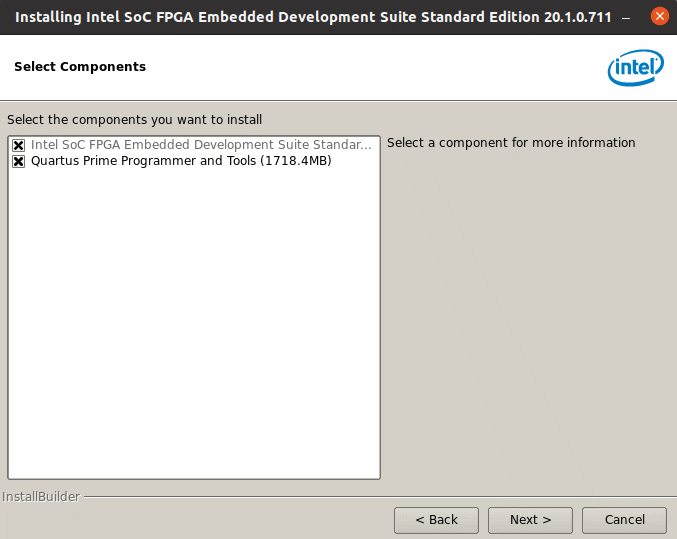

在 Ubuntu 安裝 Intel FPGA 專用的 Embedded Development Suite
- 在官網下載你需要的 EDS. 網址
- 打開 terminal 並到 EDS 下載目錄, 例如 ~/Download
$cd ~/Download
$./SoCEDSSetup-20.1.0.711-linux.run
- 就開始安裝了. (假如你用 Default 路徑安裝, 應該會安裝到
~/intelFPGA/20.1
~/intelFPGA_pro/20.1
- 當畫面出現要你選擇安裝的軟體時,請把 Quartus Prime Programmer and Tools 點掉不裝.
原因是,你在裝 Quartus 的時候已經裝過了, 再來, 如果你要安裝, 安裝程式最後可能會當掉.

- 安裝完後, 就要安裝 linaro 的 gcc toolchain
$cd ~/intelFPGA/20.1/embedded/host_tools/linaro
$./install_linaro.sh
- 接下來就安裝完成囉.